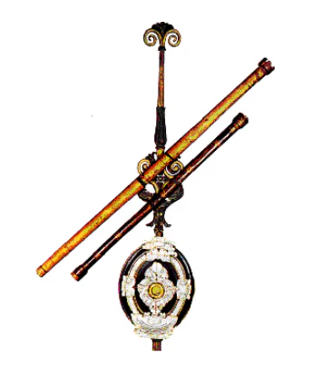
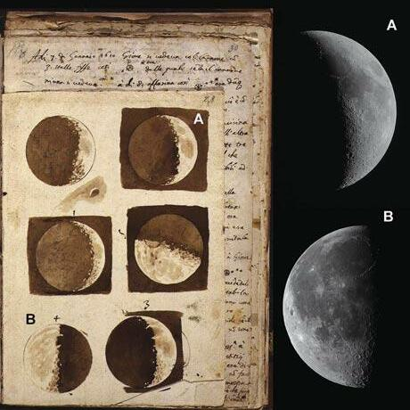
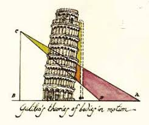

Biografía
Galileo Galilei (1564–1642) fue un astrónomo, físico e ingeniero italiano, considerado el “padre de la ciencia moderna”. Nació en Pisa, Italia, en el contexto del Renacimiento, una época de grandes cambios en la forma de entender el universo. Galileo desarrolló el telescopio astronómico, observó los satélites de Júpiter y apoyó la teoría heliocéntrica de Copérnico, lo que lo llevó a enfrentarse a la Iglesia.
| Datos Relevantes | |
|---|---|
| Año de nacimiento | 1564 |
| Fallecimiento | 1642, Arcetri, Italia |
| Lugar | Pisa, Italia |
| Educación | Universidad de Pisa (1581–1585) |
| Hijos | Vincenzo Gamba, Livia Galilei, Maria Celeste |
| Descubrimientos | 4 lunas( Europa, Ío, Ganímedes y Calisto)y los Anillos de Saturno |
Logros y Aportes
- Mejoró el diseño del telescopio y realizó observaciones astronómicas revolucionarias.
- Descubrió las cuatro lunas principales de Júpiter (Io, Europa, Ganimedes y Calisto).
- Apoyó el modelo heliocéntrico de Copérnico, desafiando la visión geocéntrica tradicional.
- Formuló leyes sobre el movimiento y la caída de los cuerpos.
- Fue pionero en el método experimental dentro de la ciencia moderna.
Además de sus contribuciones más conocidas tambien realizo avances fundamentales en diversas áreas de la ciencia. Perfeccionó el termoscopio, precedente del termómetro moderno, y desarrolló el compás geométrico-militar( herramienta usada para cálculos matemáticos y balísticos). Fue también uno de los primeros en estudiar sistemáticamente las manchas solares, demostrando que el Sol no era perfecto e inmutable como se creía.
Galería de Imágenes


